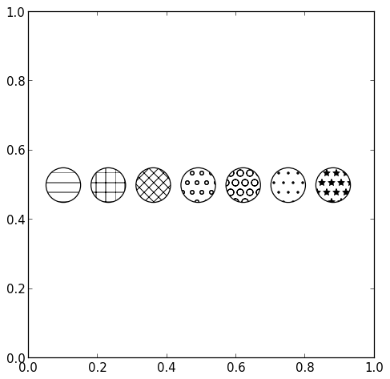
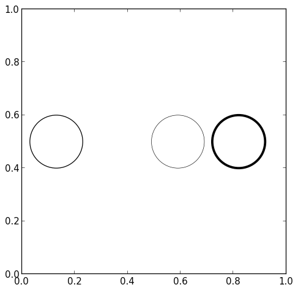

Matplotlib by Example
Circle
Contents
1 Hello Circle
import matplotlib.pyplot as plt import matplotlib.patches as patches fig1 = plt.figure() ax1 = fig1.add_subplot(111, aspect='equal') ax1.add_patch( patches.Circle( (0.5, 0.5), # (x,y) 0.2, # radius ) ) fig1.savefig('circle1.png', dpi=90, bbox_inches='tight')

2 Remove Background
import matplotlib.pyplot as plt import matplotlib.patches as patches fig2 = plt.figure() ax2 = fig2.add_subplot(111, aspect='equal') ax2.add_patch( patches.Circle( (0.5, 0.5), 0.2, fill=False # remove background ) ) fig2.savefig('circle2.png', dpi=90, bbox_inches='tight')

3 Background Patterns
import matplotlib.pyplot as plt import matplotlib.patches as patches fig3 = plt.figure() ax3 = fig3.add_subplot(111, aspect='equal') for p in [ patches.Circle( (0.25, 0.5), 0.2, hatch='/' ), patches.Circle( (0.75, 0.5), 0.2, hatch='\\', fill=False ), ]: ax3.add_patch(p) fig3.savefig('circle3.png', dpi=90, bbox_inches='tight')

import matplotlib.pyplot as plt import matplotlib.patches as patches patterns = ['-', '+', 'x', 'o', 'O', '.', '*'] # more patterns fig4 = plt.figure() ax4 = fig4.add_subplot(111, aspect='equal') for p in [ patches.Circle( (0.1 + (i * 0.13), 0.5), 0.05, hatch=patterns[i], fill=False ) for i in range(len(patterns)) ]: ax4.add_patch(p) fig4.savefig('circle4.png', dpi=90, bbox_inches='tight')

4 Background Alpha
import matplotlib.pyplot as plt import matplotlib.patches as patches fig5 = plt.figure() ax5 = fig5.add_subplot(111, aspect='equal') for p in [ patches.Circle( (0.13, 0.5), 0.1, alpha=None, ), patches.Circle( (0.36, 0.5), 0.1, alpha=1.0 ), patches.Circle( (0.59, 0.5), 0.1, alpha=0.6 ), patches.Circle( (0.82, 0.5), 0.1, alpha=0.1 ), ]: ax5.add_patch(p) fig5.savefig('circle5.png', dpi=90, bbox_inches='tight')

5 Background Color
import matplotlib.pyplot as plt import matplotlib.patches as patches fig6 = plt.figure() ax6 = fig6.add_subplot(111, aspect='equal') for p in [ patches.Circle( (0.13, 0.5), 0.1, facecolor=None # Default ), patches.Circle( (0.36, 0.5), 0.1, facecolor="none" # No background ), patches.Circle( (0.59, 0.5), 0.1, facecolor="red" ), patches.Circle( (0.82, 0.5), 0.1, facecolor="#00ffff" ), ]: ax6.add_patch(p) fig6.savefig('circle6.png', dpi=90, bbox_inches='tight')

6 Border Color
import matplotlib.pyplot as plt import matplotlib.patches as patches fig7 = plt.figure() ax7 = fig7.add_subplot(111, aspect='equal') for p in [ patches.Circle( (0.13, 0.5), 0.1, fill=False, edgecolor=None # Default ), patches.Circle( (0.36, 0.5), 0.1, fill=False, edgecolor="none" # No border ), patches.Circle( (0.59, 0.5), 0.1, fill=False, edgecolor="red" ), patches.Circle( (0.82, 0.5), 0.1, fill=False, edgecolor="#0000ff" ), ]: ax7.add_patch(p) fig7.savefig('circle7.png', dpi=90, bbox_inches='tight')

7 Border Width
import matplotlib.pyplot as plt import matplotlib.patches as patches fig8 = plt.figure() ax8 = fig8.add_subplot(111, aspect='equal') for p in [ patches.Circle( (0.13, 0.5), 0.1, fill=False, linewidth=None # Default ), patches.Circle( (0.36, 0.5), 0.1, fill=False, linewidth=0 ), patches.Circle( (0.59, 0.5), 0.1, fill=False, linewidth=0.5 ), patches.Circle( (0.82, 0.5), 0.1, fill=False, linewidth=3 ), ]: ax8.add_patch(p) fig8.savefig('circle8.png', dpi=90, bbox_inches='tight')

8 Border Style
import matplotlib.pyplot as plt import matplotlib.patches as patches fig9 = plt.figure() ax9 = fig9.add_subplot(111, aspect='equal') for p in [ patches.Circle( (0.13, 0.5), 0.1, fill=False, linestyle='solid' # Default ), patches.Circle( (0.36, 0.5), 0.1, fill=False, linestyle='dashed' ), patches.Circle( (0.59, 0.5), 0.1, fill=False, linestyle='dashdot' ), patches.Circle( (0.82, 0.5), 0.1, fill=False, linestyle='dotted' ), ]: ax9.add_patch(p) fig9.savefig('circle9.png', dpi=90, bbox_inches='tight')